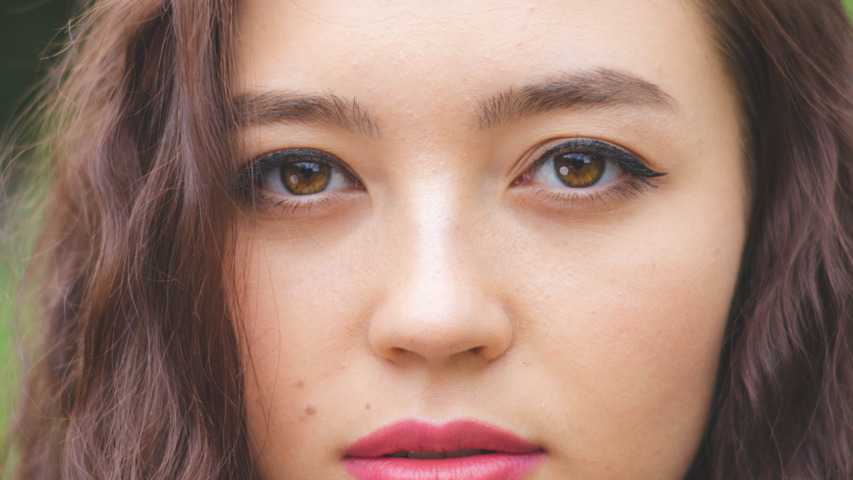
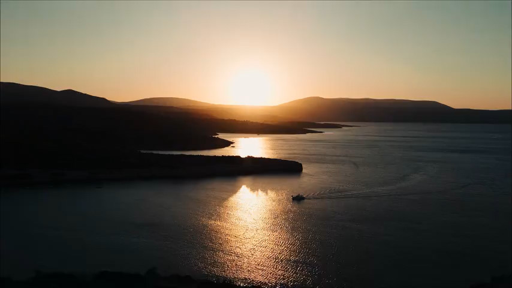

2026-07-12
mpv はフリーのメディアプレーヤーで、次の特徴がある。
Google の超解像技術から着想を得たアップスケーラー。
https://github.com/bjin/mpv-prescalers
compute
ディレクトリのものはコンピュートシェーダーで、最速。
gather
ディレクトリのものは textureGather() 関数を使用する。
ルートディレクトリのものは上の2つが動作しない古いGPU用。
ファイル名に「-ar」が付いているものはアンチリンギングを行う。
wget https://raw.githubusercontent.com/bjin/mpv-prescalers/refs/heads/master/ravu-lite-ar-r3.hook
mkdir -p ~/.config/mpv/shaders
mv ravu-lite-ar-r3.hook ~/.config/mpv/shaders/アニメコンテンツを対象としたアップスケーラー。
https://github.com/Artoriuz/ArtCNN
ファイル名に「_DS」が付いているものはデノイズ（ノイズ除去）とシャープニングを行う。
wget https://raw.githubusercontent.com/Artoriuz/ArtCNN/refs/heads/main/GLSL/ArtCNN_C4F16.glsl
wget https://raw.githubusercontent.com/Artoriuz/ArtCNN/refs/heads/main/GLSL/ArtCNN_C4F16_DS.glsl
mv ArtCNN_C4F*.glsl ~/.config/mpv/shaders/~/.config/mpv/mpv.conf に次の行を追加。
# ビデオ出力ドライバー
# https://mpv.io/manual/stable/#video-output-drivers
vo=gpu-next
# グラフィックスAPI
# https://mpv.io/manual/stable/#options-gpu-api
gpu-api=auto
# ハードウェアビデオデコードを有効にする
# https://mpv.io/manual/stable/#options-hwdec
hwdec=auto
# av1 がサポートされていない場合は「av1,」を削除（Ryzen 5 5600G など）
# https://mpv.io/manual/stable/#options-hwdec-codecs
hwdec-codecs=h264,vc1,hevc,vp8,vp9,av1,prores,prores_raw,ffv1,dpx
# アップスケーラー
# https://mpv.io/manual/stable/#options-glsl-shaders
# 「glsl-shader」はシェーダーリストにシェーダーを1個追加し、
# 「glsl-shaders」はシェーダーリストを上書きする。
# 「~~」は mpv の設定ディレクトリを表す。
glsl-shader="~~/shaders/ravu-lite-ar-r3.hook"
# ダウンスケーラー
# https://mpv.io/manual/stable/#options-dscale
dscale=lanczos
# オーディオ出力ドライバー
# https://mpv.io/manual/stable/#audio-output-drivers-ao
ao=pipewire
# 音声のみのファイルでもウィンドウを表示
# https://mpv.io/manual/stable/#options-force-window
force-window=yes
# ウィンドウを最大化
window-maximized=yes
# ターミナル出力の冗長性を減らす
quiet=yes
# オンスクリーンコントローラー
# https://mpv.io/manual/stable/#on-screen-controller-timetotal
# 右下の「残り時間」を「全体時間」に変更。
script-opts=osc-timetotal=yes~/.config/mpv/input.conf に次の行を追加。デフォルトはこちら。
# 右クリックで一時停止しない
MBTN_RIGHT ignore
# マウスホイールで音量を変更しない
WHEEL_UP ignore
WHEEL_DOWN ignore
# チルトホイールで10秒移動しない
WHEEL_LEFT ignore
WHEEL_RIGHT ignore
# PGUP/PGDWN で10分移動
PGUP seek 600
PGDWN seek -600
# Shift+PGUP/PGDWN でチャプター移動
Shift+PGUP add chapter 1
Shift+PGDWN add chapter -1
# マウスの進むボタンと戻るボタンでプレイリスト内を移動
# 移動した後にプレイリストを2秒表示
MBTN_FORWARD playlist-next; show-text ${playlist} 2000
MBTN_BACK playlist-prev; show-text ${playlist} 2000
# . と , でプレイリスト内を移動
# 移動した後にプレイリストを2秒表示
. playlist-next; show-text ${playlist} 2000
, playlist-prev; show-text ${playlist} 2000
# i でファイル情報をオンオフ
# I でファイル情報を一時的に表示
i script-binding stats/display-stats-toggle
I script-binding stats/display-stats
# Ctrl+d で再生中のファイルをゴミ箱に移動
Ctrl+d run gio trash "${path}"; playlist-remove current; show-text "\"${filename}\" をゴミ箱に移動しました" 5000
# Esc で終了
ESC quit
# シェーダーの切り替え
CTRL+1 no-osd change-list glsl-shaders set "~~/shaders/ravu-lite-ar-r3.hook"; show-text "ravu-lite-ar-r3.hook"
CTRL+2 no-osd change-list glsl-shaders set "~~/shaders/ArtCNN_C4F16_DS.glsl"; show-text "ArtCNN_C4F16_DS.glsl"
CTRL+3 no-osd change-list glsl-shaders set "~~/shaders/ArtCNN_C4F16.glsl"; show-text "ArtCNN_C4F16.glsl"
CTRL+0 no-osd change-list glsl-shaders clr ""; set scale lanczos; show-text "lanczos"モニターに超解像技術が搭載されている場合はオフにする。アップスケーラーの効果がわかりづらくなるので。
REGZA を使用している場合は次のようにする。
質感リアライザーはオフにすると全体の色味が白っぽくなる。

Source: “Shallow
Focus Photography of Woman” by Liam Anderson
License: https://www.pexels.com/ja-JP/license/
元画像を縦480にリサイズしたものを全画面で表示する。
縦1080の画像を縦1080のモニターで表示しても、1倍なのでアップスケーラーのテストにならない。2倍以上にアップスケールしないと効果が分かりづらい。
mpv https://utuhiro78.github.io/linuxplayers/images/mpv/pexels-liam-anderson-411198-1458332_480.jpg --fs --pause「Ctrl」を押したまま 0 から 3 まで押していき、違いを比較する。
シャープネスが強いアップスケーラーは髪がごわつく。
アニメ特化のアップスケーラーは髪が平面的になる。
縦480へのリサイズは次のように行った。
for file in *.jpg
do
magick "$file" -resize x480 -quality 90 "${file%.jpg}_480.jpg"
done
# Quality の確認方法
# magick identify -verbose *.jpg | grep QualitySource: “千と千尋の神隠し
作品静止画” by STUDIO GHIBLI
License: 画像は常識の範囲でご自由にお使いください。
元画像を縦480にリサイズしたものを全画面で表示する。
mpv https://utuhiro78.github.io/linuxplayers/images/mpv/chihiro030_480.jpg --fs --pause「Ctrl」を押したまま 0 から 3 まで押していき、違いを比較する。

Source: “Aerial
view of a boat sailing in the sea” by Burak Evlivan
License: https://www.pexels.com/ja-JP/license/
縦480の動画をノーウェイトで全画面再生して、終了までの時間を計測する。
wget -N https://utuhiro78.github.io/linuxplayers/images/mpv/12393381_3840_2160_60fps_480.mp4
time mpv --audio=no --untimed=yes --load-scripts=no --video-sync=display-desync --vulkan-swap-mode=immediate --opengl-swapinterval=0 --wayland-internal-vsync=no --glsl-shaders="~~/shaders/ArtCNN_C4F16_DS.glsl" --fs 12393381_3840_2160_60fps_480.mp4結果が「real 0m18.08s」のように表示される。
動画の収録時間は25秒なので、25秒以上かかるものはコマ落ちする。
縦480へのリサイズは次のように行った。
ffmpeg -i 12393381_3840_2160_60fps.mp4 -vf scale=854:480:flags=lanczos 12393381_3840_2160_60fps_480.mp4比較した結果「ArtCNN_C4F16_DS.glsl」をデフォルトにする場合は、
~/.config/mpv/mpv.conf を次のように変更。
# アップスケーラー
glsl-shader="~~/shaders/ArtCNN_C4F16_DS.glsl"「lanczos」をデフォルトにする場合は次のように変更。
# アップスケーラー
scale=lanczospython mpv_shader_benchmark.py ~/.config/mpv/shaders/*| Upscaler | Time (sec) |
|---|---|
| Lanczos | 3.34 |
| ravu-lite-ar-r3 | 6.96 |
| Anime4K_Upscale_Denoise_CNN_x2_M | 9.48 |
| ArtCNN_C4F16 | 18.08 |
| ArtCNN_C4F16_DS | 18.08 |
Test system:
| CPU | Ryzen 5 5600G |
| GPU | Integrated graphics |
| Monitor | 1920x1080 |
mkdir -p ~/.config/mpv/scripts
mv normalize-short-tracks.lua ~/.config/mpv/scripts/For tracks up to 480 seconds, the peak volume is determined and
normalized before playback begins. It covers most singles.
Calculating the peak volume takes time, so the time limit is set.
When the video starts playing, the normalization result is displayed in the top-left of the screen.